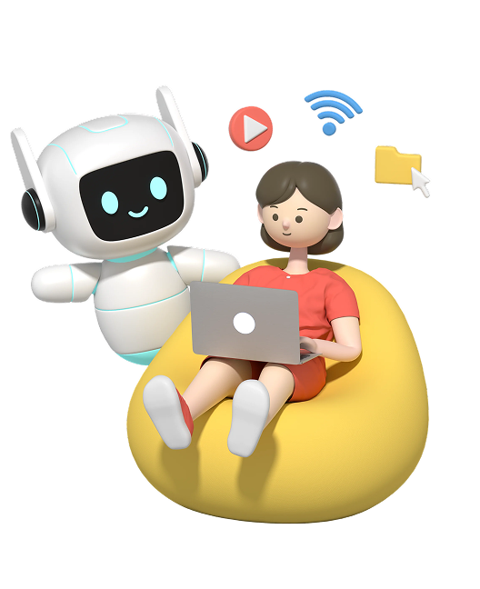
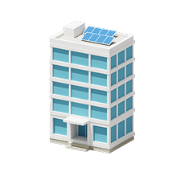
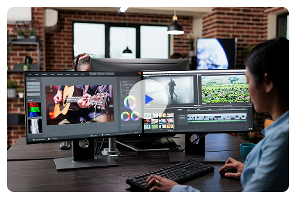
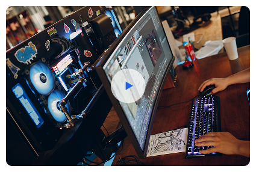
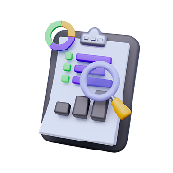

RESULT
01
대상과 목적에 맞는 교육 프로그램 설계
학습자의 특성과 교육 목표를 분석하고,
실제 교육 현장에 적용할 수 있는 프로그램을 직접 기획합니다.
신중년 디지털 역량 강화
평생교육 프로그램 기획서
요구분석
목표 설정
평가 설계
운영안
기업 신입사원 온보딩
이러닝 과정 설계안
※ 위 결과물은 예시이며, 실제 교과 운영에 따라 달라질 수 있습니다.
건양사이버대학 학업 유지율
교육역량과 AI융합교육역량을 기반으로 AI활용능력 인증, AI 실무, AI교육콘텐츠
기획을 융합한 맞춤형 평생교육현장 AI융합교육전문가로 거듭나세요.

자격마다 필요한 과목과 취득 기준은 다릅니다.
학위 과정과 자격 준비를 연결해 놓치기 쉬운 요건까지 미리 확인해 보세요.
학습자를 분석하고, 목표를 세우고, 효과를 측정하는 교육 설계의 정석.
평생교육 현장과 기업교육
어디서든 통하는 기획력을 기릅니다.
학습자 분석
목표 · 순서 설계
교과목
교육 프로그램 기획안
대상·목표·차시
구성을 담은 기획안 한 편
POINT 01
-1학년 입학 시 3년, 3학년 편입 시 단 1년 졸업
-전국 대학 최초 다학점이수과정 실시!
POINT 02
-직장인 및 산업체 재직자 장학혜택
-등록금 부담은 낮추고 학업 기회는 넓게!

POINT 03
-최신 시설에서 직접 경험하는 현장 실습
-현장 중심의 실무 역량 강화!
POINT 04
-전담 멘토와 교수진의 체계적인 학사관리
-학위 취득부터 자격증·진로 설계까지!
미래 교육 전문가
교육 대상에 맞는 프로그램 설계부터 AI를 활용한 학습자료와 교육 영상 제작까지!
미래 교육 현장에서 활용할 수 있는 역량을 키워보세요.
RESULT
01
학습자의 특성과 교육 목표를 분석하고,
실제 교육 현장에 적용할 수 있는 프로그램을 직접 기획합니다.
신중년 디지털 역량 강화
평생교육 프로그램 기획서
요구분석
목표 설정
평가 설계
운영안
기업 신입사원 온보딩
이러닝 과정 설계안
※ 위 결과물은 예시이며, 실제 교과 운영에 따라 달라질 수 있습니다.
RESULT
02
생성형 AI를 활용해 교육 주제에 맞는 학습 콘텐츠와 워크시트를 제작하고,
학습자의 이해를 돕는 자료로 구체화합니다.
생성형 AI 맞춤형 활동지 세트
학습자가 수준별 문항 · 이미지 자동 생성 & 검수
프롬프트 초등 4학년 ‘물의 순환’ 활동지 만들어줘
챗봇 튜터 시나리오 설계
학습자 질문 흐름을 설계하고 AI 튜터로 구현
※ 위 결과물은 예시이며, 실제 교과 운영에 따라 달라질 수 있습니다.
RESULT
03
교육 프로그램 기획부터 AI 학습자료 제작, 교육 영상까지!
수업에서 배운 내용을 직접 기획하고 완성한 재학생들의 결과물을 확인해 보세요.


※ 위 결과물은 예시이며, 실제 교과 운영에 따라 달라질 수 있습니다.
여기서 궁금하지 않나요?
평생교육기관부터 기업교육, AI 기반 콘텐츠 제작까지!
배운 역량을 다양한 교육 분야에서 활용할 수 있습니다.
직장 다니면서 졸업할 수 있을까?
주차별 동영상 강의를 원하는 시간에 수강하고, 모바일로 이어보기까지!
이번 주에 들을 강의와 수강 기간을 확인하세요!

기획안 · AI 학습자료 등 포트폴리오가 되는 과제를 온라인으로
제출하고 피드백 받으세요!
생성형 AI · 저작도구를 직접 다뤄보며 바로 쓰는 실무 감각 완성!
제출 일정과 시험 일정을 미리 체크하세요!
새로운 시작이 두렵지 않도록
처음 시작하는 학업도 걱정하지 마세요. 교수진의 학습 안내부터 온라인 학습지원,
먼저 경험한 선배들의 멘토링까지 든든한 대학생활을 위한 지원 환경을 확인해 보세요.
교육학 · 교육공학 · AI 분야
전공 교수진이 이론과
실무를 함께 지도합니다.
수강 설계부터 학업 고민까지,
멘토가 학습 흐름이 끊기지
않도록 이어줍니다.
재학 기간 동안 Word ·
PowerPoint · Excel 등 실무 도구를
무료로 지원합니다.
입학 전 꼭 확인해야 할 숫자
18학점 기준 등록금
0원
장학 적용 전 금액 · 2027학년도 전기 모집요강 기준
학점당
0원
오프라인 출석
부담 0원
확인해보세요!
대학 진학이 처음이어도, 예전에 다니던 학업을 이어가고 싶어도 괜찮습니다.
지원 자격과 전형별 조건을 확인해 보세요.
신입생이라면?
지원 자격 : 고등학교 졸업(예정)자
또는 법령에 의한 동등 이상 학력 소지자
전형 방법 : 서류 중심 전형
(수능 · 내신 성적 부담 최소화)
추천 대상 : 처음 학업을 시작하는
직장인 · 주부 · 재도전 학습자
편입생이라면?
2학년 편입 : 4년제 대학 1년 이상 수료 등
관련 학점 보유자
3학년 편입 : 전문학사 이상 학위 소지자
또는 4년제 2년 이상 수료자
장점 : 기존 학점 인정으로
졸업 · 자격 준비 기간 단축
※ 세부 지원 자격 및 제출 서류는 해당 학년도 모집요강 기준으로 상담 시 안내드립니다.
네. 모든 수업이 100% 온라인으로 진행되어 출퇴근 시간이나 주말을 활용해 수강할 수 있습니다. PC·태블릿·모바일 모두 지원합니다.
평생교육사 2급은 별도의 자격시험 없이, 법령에서 정한 관련 과목 이수와 현장실습을 마치면 취득할 수 있습니다.
기초부터 단계적으로 배우도록 구성되어 있습니다. 생성형 AI 도구 사용법부터 교육 현장 적용까지 차근차근 진행합니다.
기준 등록금은 18학점 기준 1,350,000원입니다. 교내장학과 국가장학금 신청이 가능하며, 개인 조건별 예상 납부액은 상담 시 안내드립니다.
편입학의 경우 기존 학점을 인정받아 2학년 또는 3학년으로 입학할 수 있습니다. 정확한 인정 범위는 상담을 통해 확인해 주세요.
교육·복지기관의 프로그램 기획자, 기업 HRD·이러닝 운영자, 에듀테크 콘텐츠 기획자 등으로 진출할 수 있습니다.